Usando Claude Design
Monte o design system da API Capital dentro do seu Claude Design, uma vez, e todo projeto novo já nasce com a marca.
Você precisa de uma conta no GitHub (gratuita) para usar o nosso design system com o Claude Design. Crie em github.com/signup antes de começar.
O Claude Design está em claude.ai/design e na barra lateral do app do Claude. As telas dele estão em inglês; os nomes dos botões aparecem aqui como estão na tela. Não tem Claude Design ou ficou sem limite de uso? Use o caminho Usando Claude.
1. Set up a design system
Abra claude.ai/design e clique no selo Set up a design system, no canto inferior direito. Ou abra a aba Design systems.
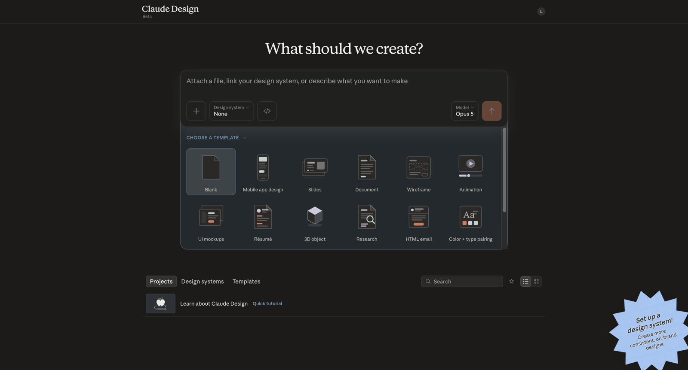
2. Create here
Escolha Create here.
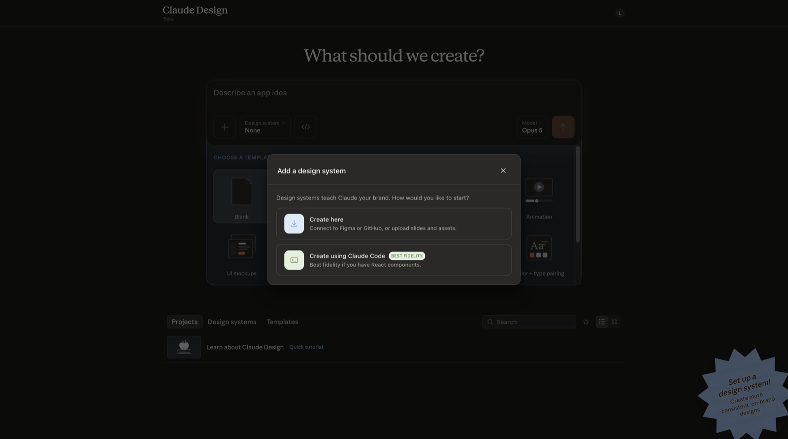
3. Preencha o formulário
No campo Company name and blurb, cole:
Em Link code from GitHub, cole o endereço abaixo e clique em Add. Os outros campos ficam vazios: tudo já está no repositório.
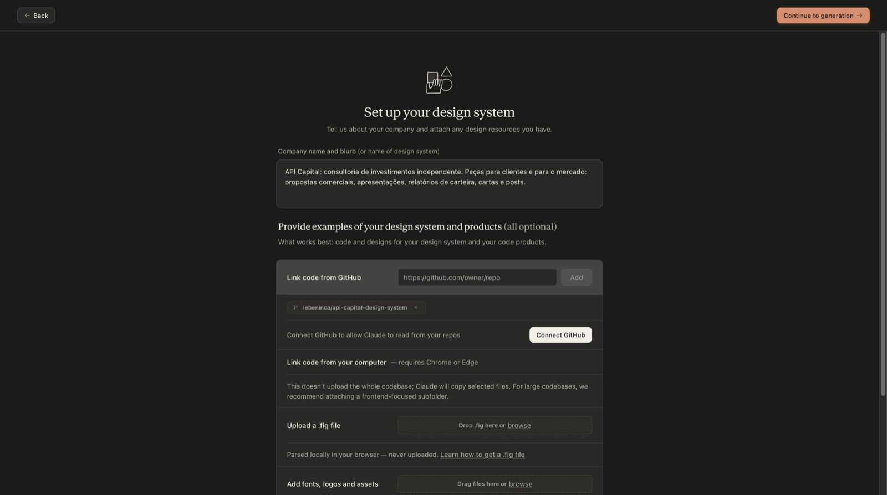
4. Continue to generation e Connect GitHub
Clique em Continue to generation, no topo. Na janela que abre, clique em Connect GitHub. Sem essa conexão, o Claude Design não lê o repositório.
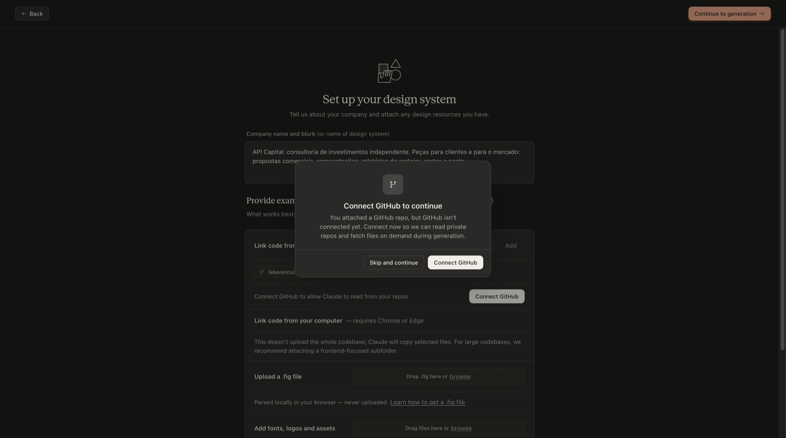
5. Autorize no GitHub
Abre uma janela do GitHub. Entre na sua conta, se pedir, e clique em Authorize.
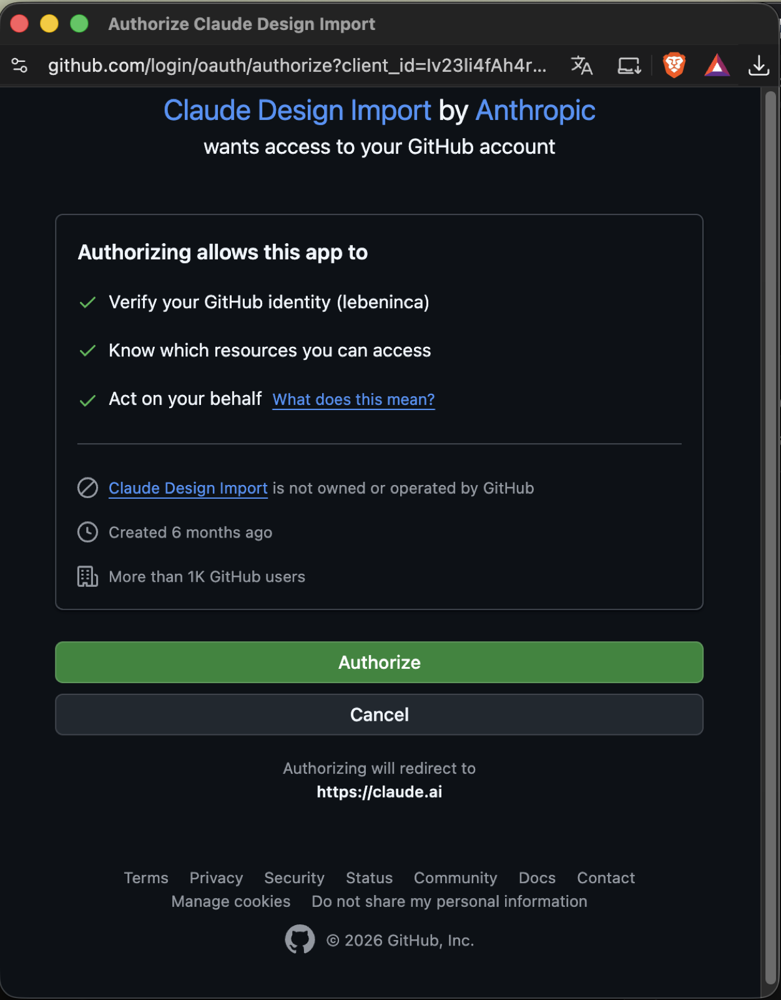
6. Install & Authorize
Na tela seguinte, deixe como está e clique em Install & Authorize. A permissão é só de leitura.
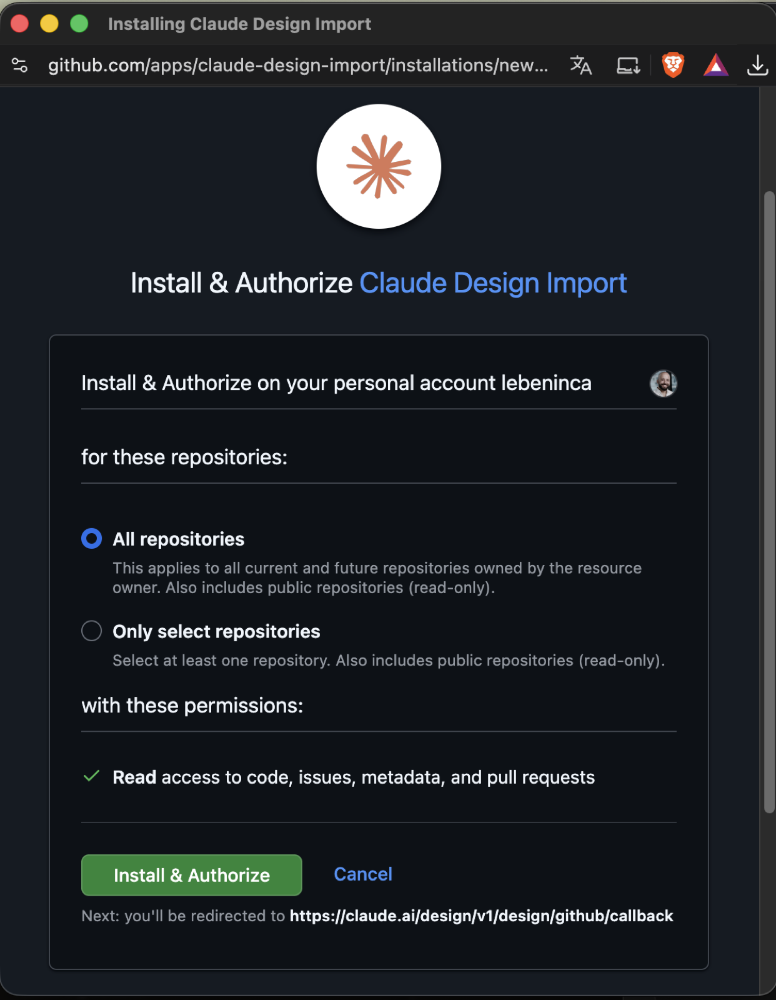
7. Confirme por e-mail, se pedir
O GitHub pode pedir confirmação. Clique em Verify via email e use o código que chega no seu e-mail.
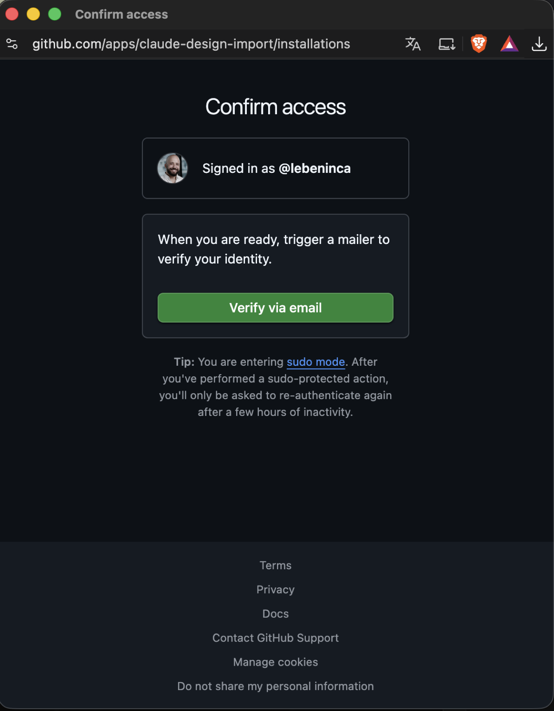
8. Feche a janela do GitHub
Quando aparecer GitHub successfully linked, feche essa janela e volte ao Claude Design.
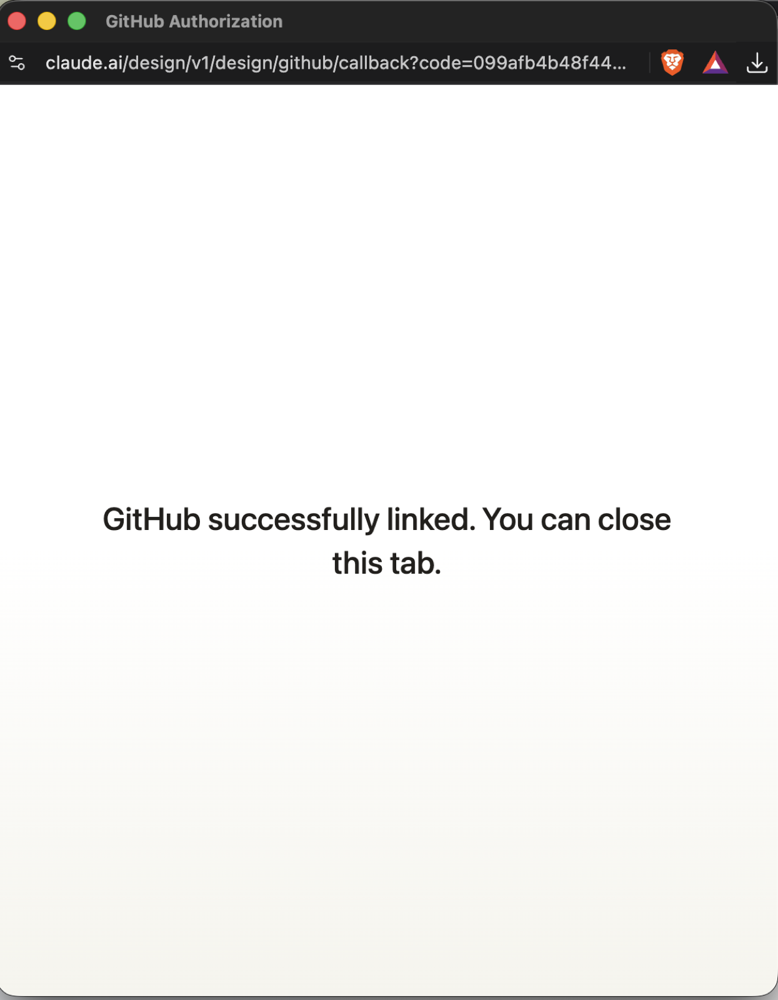
9. Attach your codebase
O Claude Design mostra a lista de repositórios. Se APICapital/api-capital-design-system aparecer, marque e clique em Continue. Se a lista vier vazia ou sem ele, clique em Skip: o endereço colado no passo 3 já basta.
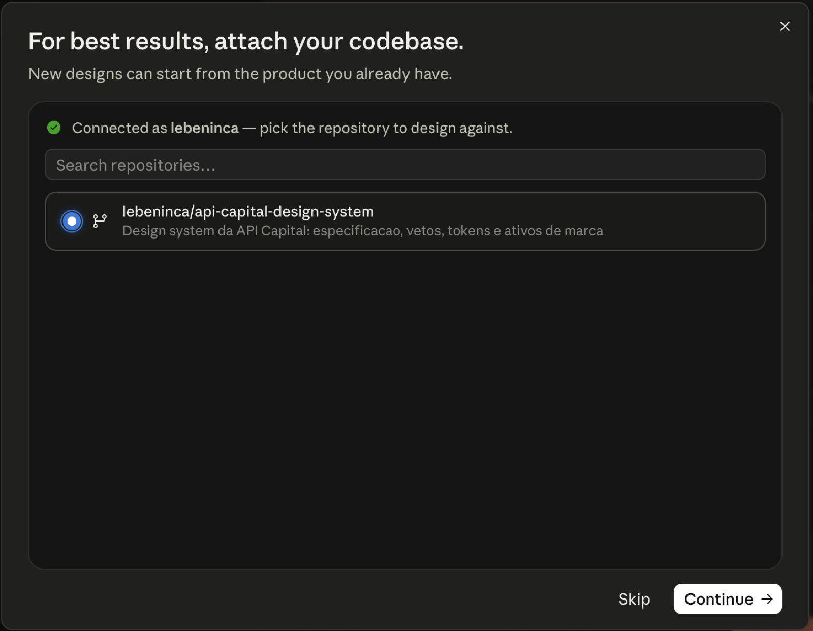
10. Responda as perguntas
Marque as peças que você mais usa e escolha Português (BR). Clique em Send answer.
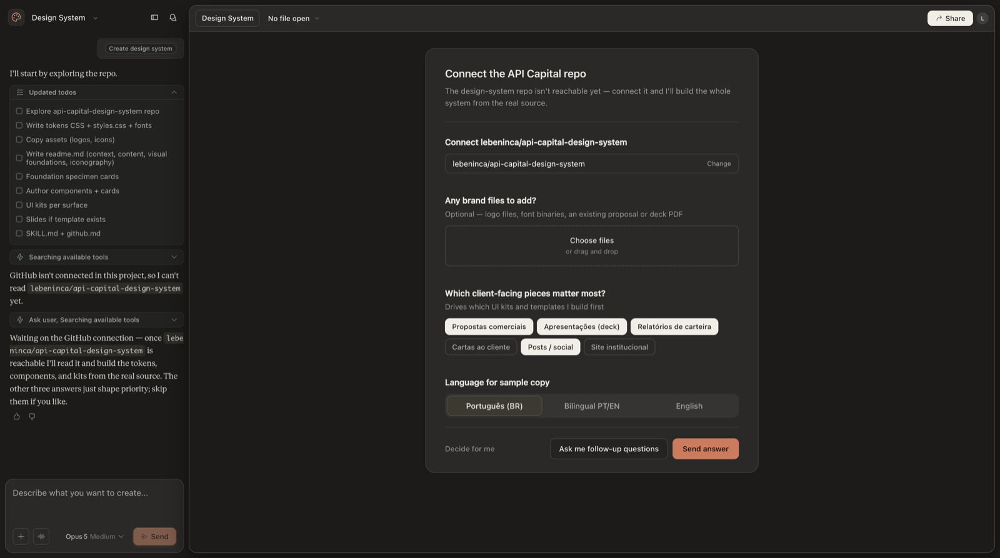
11. Espere a geração
A montagem pode passar de 15 minutos. Deixe a aba aberta e volte depois.
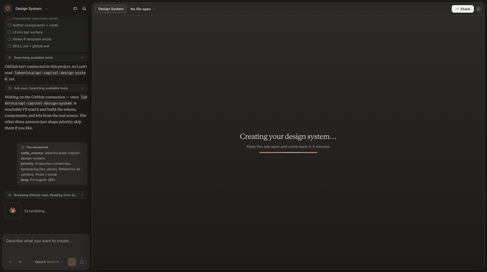
12. Pronto
Aparece o API Capital Design System, com modelos, marca, cores e componentes. Confira se Published está marcado: é o que faz todo projeto novo usar a marca.
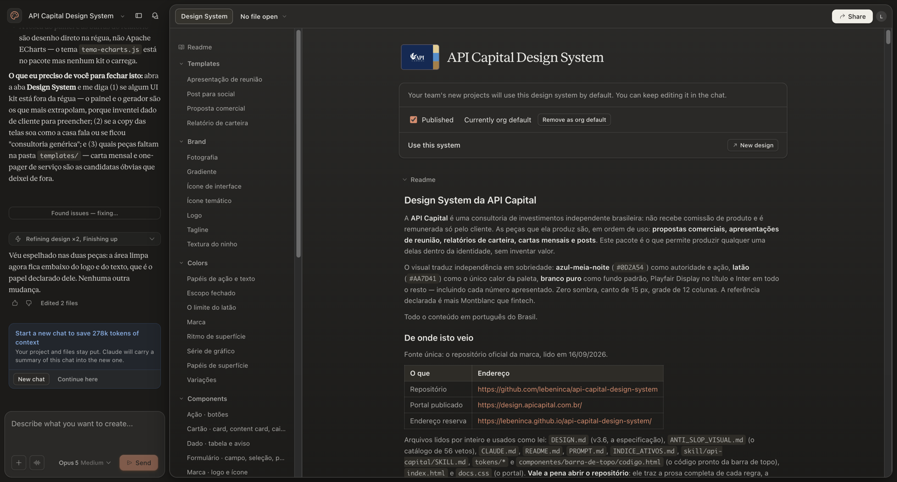
No dia a dia
Na tela inicial do Claude Design, o seletor Design system, ao lado da caixa de pedido, mostra API Capital Design System, e os modelos da API aparecem logo abaixo. Escolha um modelo ou peça em português: “faz um post para o Instagram com a evolução do IPCA nos últimos 5 anos”.
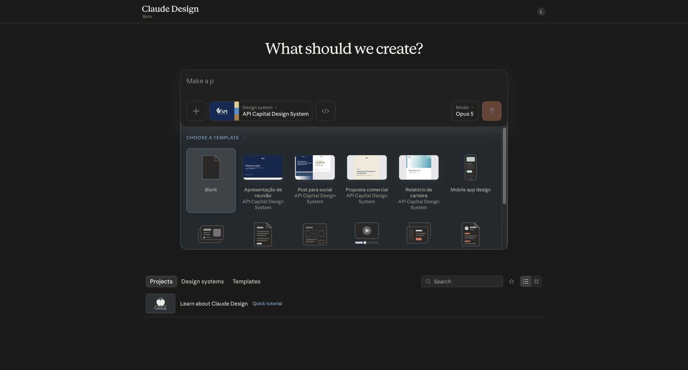
O design system gerado pelo Claude Design é uma leitura do repositório. Se algo sair fora da marca, a régua que vale é a deste site.
Quando sair versão nova
Diferente da skill do chat, o Claude Design guarda uma cópia do design system. Quando aparecer versão nova em O que há de novo?, abra o design system da API Capital na aba Design systems, clique em Remix e peça: “atualize a partir do repositório”.